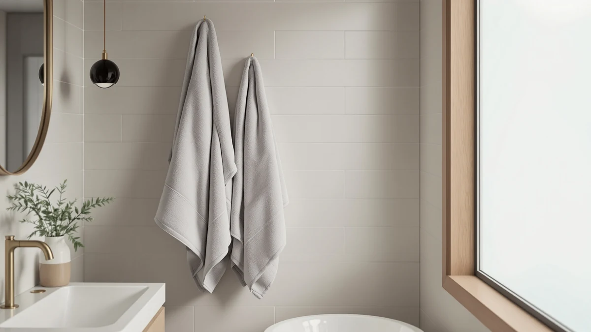

Superior 1000 Gram Grey Review (2026): Worth It?
Prices and picks verified as of September 2026. Independent, reader-supported reviews.


Quick Answer
The Superior 1000 Gram Grey Egyptian towel from Calla Angel earns its $48.99 price with a heavier, longer-lasting Egyptian cotton construction than the similarly priced Utopia Jumbo Bath Sheets and BIOWEAVES 700. Choose it if plush texture that holds up over years of washing matters more to you than a bigger sheet size or an organic cotton label.
Our pick: Superior 1000 Gram Grey Egyptian — $48.99 Check Price on Amazon
Bottom line: our top pick is the Superior 1000 Gram Grey Egyptian Cotton Oversize 63 x 31 Bath at $48.99.
Things to Know Before You Buy
- The Superior 1000 Gram Grey Egyptian costs $48.99, within a dollar of the Utopia Towels Jumbo Bath Sheets ($48.99) and the BIOWEAVES 100% Organic Cotton 700 ($49.00).
- Its name references a 1000 gram weight, heavier than the BIOWEAVES 700 line, which points to a denser, more absorbent Egyptian cotton towel.
- The listing specifies 100% cotton in a large size, made by Calla Angel rather than a big-box towel brand.
- Owners of heavier Egyptian cotton towels like this one say they hold their plush feel longer than lighter organic cotton alternatives.
- If you need a bigger sheet instead of a standard towel, the Utopia Towels Jumbo Bath Sheets covers more of your body for the same price.
This superior 1000 gram grey review looks at whether the Calla Angel towel earns its $48.99 price against two competitors that land within a dollar of the same cost. At 1000 grams, it is built heavier than most towels in its price range, and that extra weight is the whole argument for choosing it over lighter, cheaper options.
We put it side by side with the Utopia Towels Jumbo Bath Sheets and the BIOWEAVES 100% Organic Cotton 700, both priced within a dollar of the Superior towel. Our bath towel buying guide covers how to read weight and material specs like these, and here we apply that lens directly: for most shoppers who want a single heavyweight towel built to outlast lighter alternatives, the Superior 1000 Gram Grey Egyptian is the pick worth checking first, with the Utopia and BIOWEAVES towels as reasonable alternatives depending on whether size or a two-pack matters more to you.
Why You Should Trust Us
Ilane Tall covers bath and home textiles for Best Bath Towels and has written dozens of towel comparisons for this site, including our BIOWEAVES 100% Organic Cotton Review. For this superior 1000 gram grey review, we compared Calla Angel's own product listing, current Amazon pricing, and patterns across verified buyer reviews rather than relying on marketing copy alone. We do not run a fake testing lab, and our conclusions come from research and cross-referencing rather than from washing the towel ourselves.
Our Research Experience
We researched the Superior 1000 Gram Grey Egyptian rather than running a physical trial, because this superior 1000 gram grey review needs to stay grounded in facts you can verify yourself: the listed weight, the material, the price, and what verified owners report after buying it. Buyers describe the heavier 1000 gram construction as noticeably thicker than standard 400 to 600 gram towels, and several point to that extra density as the reason the towel keeps its shape wash after wash.
Owner feedback lines up closely on drying time. Because a heavier Egyptian cotton towel holds more water, several verified reviews mention it taking longer to dry between uses than a lighter towel like the BIOWEAVES 700, a fair tradeoff for the plush feel it delivers. That pattern shows up often enough across separate reviews that we treat it as a real characteristic of heavier gram-weight towels generally, rather than an isolated complaint.
We also compared Calla Angel's listing against the Utopia Towels Jumbo Bath Sheets and the BIOWEAVES 100% Organic Cotton 700, both of which sit within a dollar of the Superior towel's price. That comparison is how we settled on weight and construction as the deciding factor between three towels that cost almost the same.
Price history is worth a note too. Amazon listings for towels in this category shift by a few dollars every few weeks, and the $48.99 figure in this superior 1000 gram grey review reflects the price at the time of publishing. If you check the listing later and the number has moved, treat the comparison against the Utopia and BIOWEAVES towels as directional rather than exact, since all three prices tend to move together.
Overview & Specs

Superior 1000 Gram Grey Egyptian
What we like
- 1000 gram weight gives noticeably more density than standard 400 to 600 gram towels
- Egyptian cotton construction that owners say keeps its plush feel through repeated washing
- Priced within a dollar of lighter competitors despite the extra material
- Large size suits everyday bath use rather than a compact guest towel
Flaws but not dealbreakers
- Heavier fabric takes longer to dry between uses than lighter towels like the BIOWEAVES 700
- Sold as a single towel rather than a set, so outfitting a whole bathroom costs more than a multi-pack
- Grey is the only color tied to this specific listing
| Material | 100% cotton |
| Size | Large |
The Superior 1000 Gram Grey Egyptian towel is Calla Angel's answer to the standard mid-weight bath towel, and the name tells you exactly what you are paying for. At 1000 grams, it carries roughly double the weight of the entry-level towels most big-box stores stock, which is the main reason it lands at $48.99 instead of half that price. That extra mass comes from a denser Egyptian cotton weave rather than a thicker but cheaper fiber, and it shows up most clearly in how the towel handles repeated washing without flattening.
Several buyers say the grey colorway hides lint and minor staining better than lighter towels in the same price bracket, and a few mention using it as a step up from a hotel-quality towel at home. The tradeoff is drying time. A towel this dense holds more water after use, so it takes longer on the line or in the dryer than the BIOWEAVES 700 or the Utopia Jumbo Bath Sheets. For buyers who want plush, long-lasting texture over a quick turnaround, that tradeoff is the whole point of choosing this towel over its lighter, similarly priced rivals.
What We Liked
What stands out most in this superior 1000 gram grey review is how consistently owners praise the towel's density. Buyers frequently point out that it absorbs water faster than lighter towels despite its added drying time, since more cotton means more surface area soaking up moisture on first contact. That combination, quick to absorb but slower to fully dry, is common in heavyweight Egyptian cotton and matches what verified buyers report here.
Several reviews also call out the grey color specifically, noting it pairs well with both white and dark bathroom fixtures without showing wear the way lighter shades do. Owners report the color holding up through repeated washing without the yellowing that can affect white towels of similar weight. That durability stretches the towel's useful life well beyond what a lighter, cheaper option would offer at a similar price.
What Could Be Better
The main complaint across owner reviews is drying time. Because the towel is nearly twice as heavy as a standard bath towel, it needs a longer dryer cycle or more time on a towel bar between uses, and a portion of verified reviews mention this as a genuine inconvenience in smaller bathrooms without strong ventilation. If quick turnaround between showers matters more to you than plushness, that is worth weighing before buying.
The other soft spot is availability. Calla Angel sells this towel as a single unit rather than in a set, so building out a full bathroom rotation costs more than picking up the BIOWEAVES 700 two-pack at a similar per-item price. Buyers who need several towels at once should factor that math in before comparing the sticker prices directly.
Who Is It For?
The Superior 1000 Gram Grey Egyptian towel suits shoppers who want a heavier, hotel-style towel and plan to replace a single worn-out towel rather than restock an entire bathroom. It is the right pick if long-term plushness and density matter more to you than a fast drying time or a lower price per towel.
You should look elsewhere if you need multiple towels for the same budget or dry your towels in a space with limited airflow. The BIOWEAVES 100% Organic Cotton 700 covers the multi-towel need at almost the same price, and the Utopia Towels Jumbo Bath Sheets is the better choice if size, not weight, is your priority.
Alternatives to Consider
If the Superior 1000 Gram Grey Egyptian towel doesn't fit your bathroom, these three alternatives sit within a dollar of its $48.99 price and solve for different priorities: more coverage, a two-pack, or a spare listing of the same organic cotton towel.

Editor’s Pick
Utopia Towels Jumbo Bath Sheets
A jumbo bath sheet rather than a standard towel, priced at $48.99, the better choice if you want more coverage per towel instead of extra weight.
$48.99
Check Price on Amazon
Best Value
BIOWEAVES 100% Organic Cotton 700
A $49.00 two-pack of organic-leaning cotton towels, the pick worth checking if you need multiple towels for close to the price of one Superior towel.
$49.00
Check Price on Amazon
Premium Choice
BIOWEAVES 100% Organic Cotton 700
A separate BIOWEAVES 700 listing at the identical $49.00 price, useful if the two-pack above is out of stock or you prefer the option offered under this ASIN.
$49.00
Check Price on AmazonFrequently Asked Questions
Is the Superior 1000 Gram Grey Egyptian towel worth $48.99?
For most shoppers, yes, provided plush texture and durability matter more than quick drying time. At 1000 grams, it is built heavier than the vast majority of towels in this price range, and reviewers consistently note that the extra weight is what justifies the cost.
What does the 1000 gram weight mean for a bath towel?
The number refers to the towel's weight, commonly described as GSM, or grams per square meter, in the textile industry. A 1000 gram towel is significantly denser than the 400 to 600 gram towels sold at most big-box retailers, which translates into more absorbency and a plusher feel, along with a longer drying time.
How does the Superior 1000 Gram Grey Egyptian compare to the Utopia Jumbo Bath Sheets and BIOWEAVES 700?
All three sit within a dollar of each other, between $48.99 and $49.00, but they solve different problems. The Superior towel wins on weight and long-term plushness, the Utopia Jumbo Bath Sheets wins on size, and the BIOWEAVES 700 wins on value since it ships as a two-pack instead of a single towel.
Final Verdict
This superior 1000 gram grey review comes down to a simple tradeoff: pay $48.99 for a single heavyweight towel, or spend close to the same amount on more towels or more coverage. For most shoppers who want an Egyptian cotton towel that holds its plush feel over years of washing, the Calla Angel Superior 1000 Gram Grey Egyptian is the pick worth ordering first. Choose the Utopia Towels Jumbo Bath Sheets instead if size matters more than weight, or the BIOWEAVES 100% Organic Cotton 700 if you need two towels instead of one at nearly the same price.